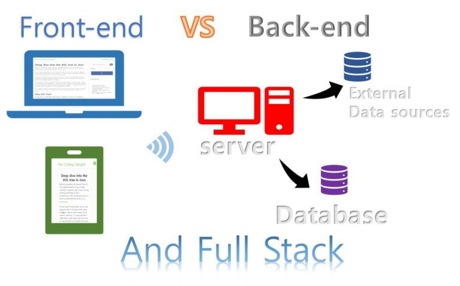

2. Tecnologies per a programació web del costat del servidor
Introducció
Des d'un punt de vista de desenvolupament una aproximació més detallada al model client-servidor és el que es coneix com a model en 3 capes. És un model on es mostra més en detall com es distribueix el programari que participa en qualsevol desenvolupament web. Segueix estant present l'arquitectura client-servidor (tot es basa en ella) però apareixen més detalls com el programari utilitzat en cada un dels dos actors i com interactuen les diferents tecnologies o aplicacions.
Per comprendre millor que és el model de desenvolupament de 3 capes podem tirar un ull al següent esquema on es mostra cadascuna d'aquestes capes i que s'encarrega cadascuna d'elles:

- Capa de presentació: És la capa on l'aplicació es mostra a l'usuari. Bàsicament és la GUI (Graphical User Interface, interfície gràfica d'usuari). En el cas d'una aplicació web seria el codi HTML que es carrega directament al navegador web. En qualsevol cas, s'executa directament en l'equip del client.
- Capa de negoci: És la capa intermèdia on es porta a terme tota la lògica de l'aplicació. Sempre s'executarà en el costat servidor. Aquesta capa, després de realitzar tots els càlculs i / o operacions sobre les dades, genera el codi HTML que serà presentat a l'usuari en la capa següent.
- Capa de dades: És la capa que emmagatzema les dades. Bàsicament, en condicions normals, fa referència al propi SGBD que és l'encarregat d'emmagatzemar les dades. Depenent de l'arquitectura de l'aplicació, aquesta capa i la de negoci es poden trobar físicament en el mateix equip, encara que també és possible que s'hagin de separar per qüestions de rendiment. La capa de dades serveix totes la informació necessària a la capa de negoci per dur a terme les seves operacions.
Si ens imaginem una botiga online, la capa de dades emmagatzema tota la informació en una base de dades (usuaris, comandes, articles, ofertes,...), La capa de negoci ha d'accedir a aquesta informació i, després processar una comanda, per exemple, ha de presentar el resultat final a l'usuari en el navegador, que és la capa de presentació.
I si ens centrem en un cas concret amb programari i tecnologies ja definits, un model de 3 capes podria ser el següent:
")
- Navegador web: En aquest cas, Mozilla Firefox, Internet Explorer o Google Chrome podrien ser qualsevol de les aplicacions que ocuparien aquesta capa
- Apache + PHP / IIS + ASP: Un servidor web acompanyat del seu corresponent llenguatge de programació web permeten desenvolupar la part que ocupa la capa de negoci. També podríem col·locar la combinació Apache Tomcat + Servlets
- MySQL / PostgreSQL: Finalment a la capa de dades podem posar qualsevol SGBD, com poden ser MySQL o PostgreSQL.
L'avantatge principal d'aquest model és que el desenvolupament es pot dur a terme en diversos nivells i, en cas que sobrevinga algun canvi, només afectarà el nivell requerit sense haver de revisar entre el codi font d'altres mòduls, atès que s'haurà reduït el acoblament informàtic fins a una interfície de pas de missatges. :::
Front-end, Back-end, Full stack
També tenint en compte en quin costat se situen les tecnologies i per a què s'utilitzen aquestes, actualment es parla molt de 3 perfils diferenciats en l'àmbit del desenvolupament web:
- Front-end: És la part del desenvolupament que s'encarrega del disseny i maquetació de l'aplicació web utilitzant tecnologies com HTML, CSS i Javascript (i els seus frameworks). En aquest cas s'ha de preocupar també de la correcta presentació en qualsevol tipus de dispositiu i fins i tot del posicionament en cercadors
- Back-end: És la part del desenvolupament que s'encarrega del costat servidor utilitzant tecnologies com PHP, JSP i Python. També s'encarrega de l'administració del servidor d'aplicacions i la base de dades.
- Full stack: En un perfil que engloba els dos anteriors. En aquest cas el desenvolupador potser no és un expert de cap tecnologia concreta però té amplis coneixements de tot el conjunt i és capaç de col·laborar en qualsevol de les parts.

Servidors web i servidors d'aplicacions
Així com les aplicacions d'escriptori s'executen directament sobre el sistema operatiu, les aplicacions web necessiten d'una eina addicional que permeti desplegar-les per a la seva posada en marxa. Parlem de servidors web i servidors d'aplicacions, respectivament.
Què és un servidor web?
Un servidor web és una aplicació que rep una petició HTTP (normalment a través d'un navegador web) i retorna la pàgina web sol·licitada (escrita en llenguatge HTML i podent contenir codi Javascript encastat) perquè aquesta sigua interpretada i visualitzada pel navegador de qui va realitzar la sol·licitud (l'usuari).
Què és un servidor d'aplicacions?
Un servidor d'aplicacions és un servidor que permet l'execució d'aplicacions web.
Exemples
Apache
Apache és un dels servidors web més coneguts. És programari lliure i multiplataforma, encara que aproximadament el 90% dels servidors Apache s'executen actualment en entorns Linux ja que és el servidor preferit per a aquesta plataforma.
És molt modular el que permet incorporar característiques un cop instal·lat i posat en marxa. Això li fa també molt flexible i pot donar servei a webs escrites en els llenguatges de programació web més estesos (com PHP, Python, ASP,...) A través del mòdul corresponent.
Apache Tomcat
Apache Tomcat és un servidor d'aplicacions que funciona com a contenidor de Servlets de Java. Actualment és capaç d'implementar diverses especificacions de Java EE com Servlets i JSP (Java Server Pages) i més proporciona un servidor web pur perquè es faça servir en combinació amb l'entorn Java.
WSGI (Web Server Gateway Interface)
WSGI és una interfície que defineix com es comunica un servidor web amb aplicacions web o frameworks escrits en Python.